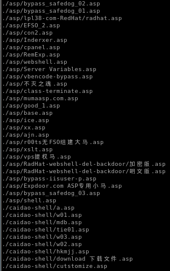
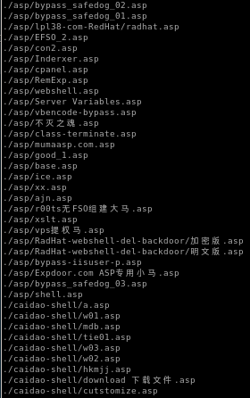
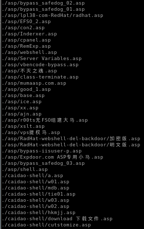
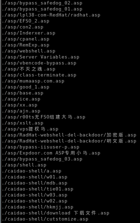

tennc webshell github
theres a great github repository filled with webshells we can use thanks to ippsec found here

to find .asp files we can simply grep for them
find . | grep .asp$
($ to return results where .asp is at the end of the filename)
 
